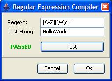
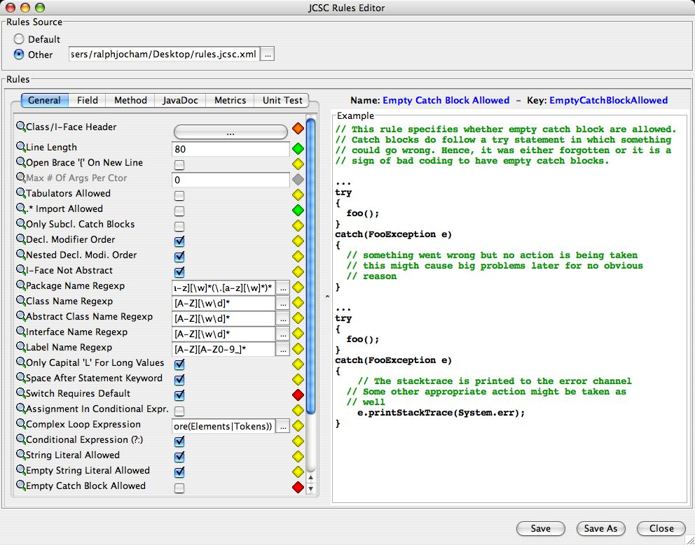
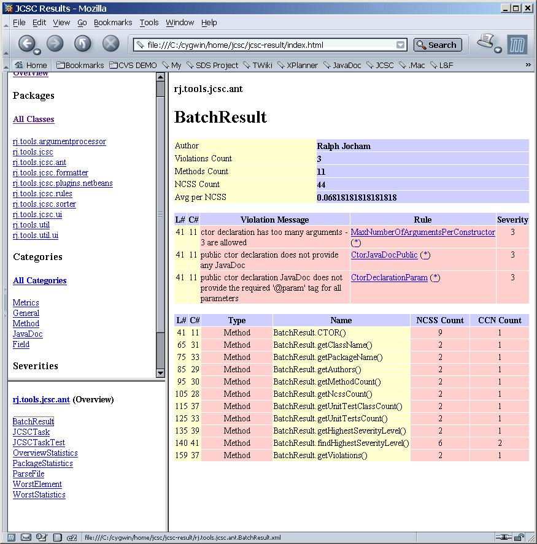
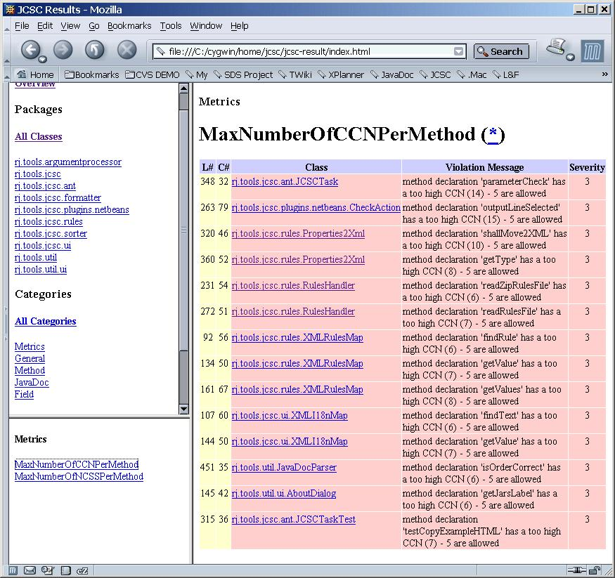
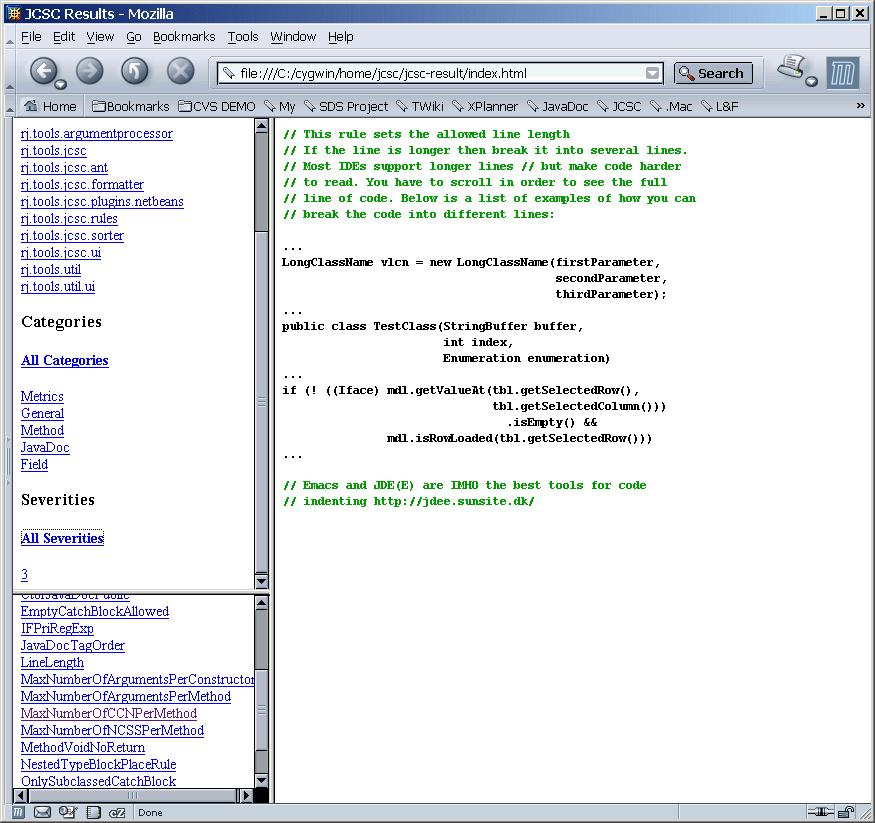
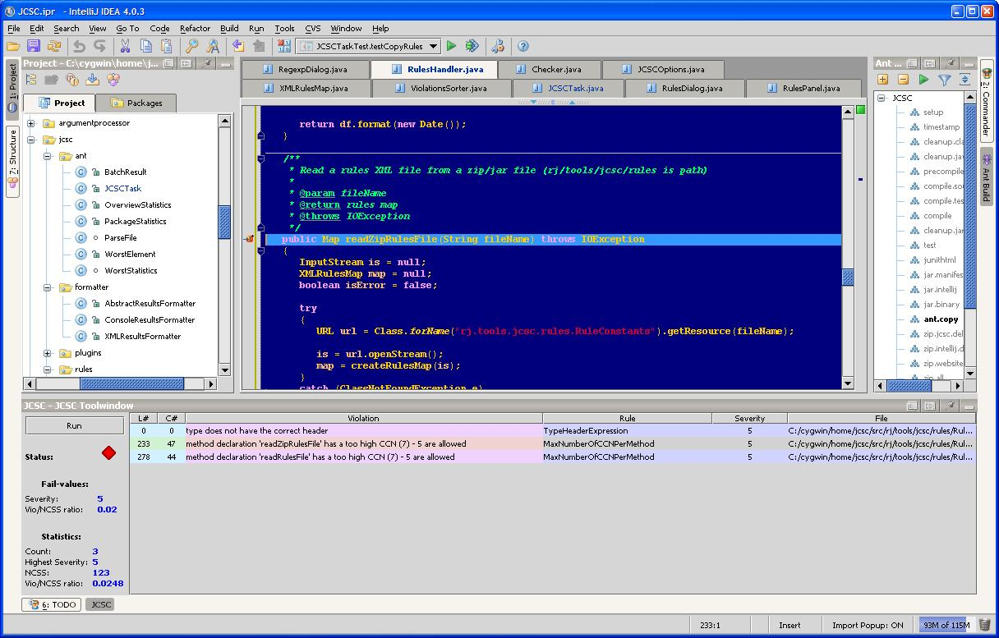
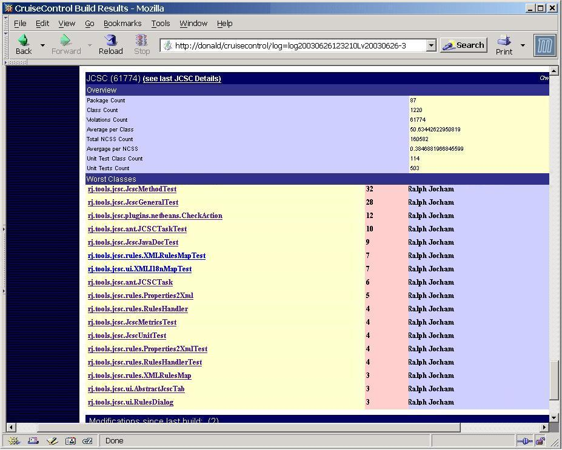

The Rules UI

RegExp Compiler

Rules UI on Mac OS X

Website generated by the JCSC Ant task

Detailed view of a parsesd File

Violations by Category/Severity

Description of Rule Violation

IntelliJ IDEA plugin

CruiseControl website showing the JCSC
extension
